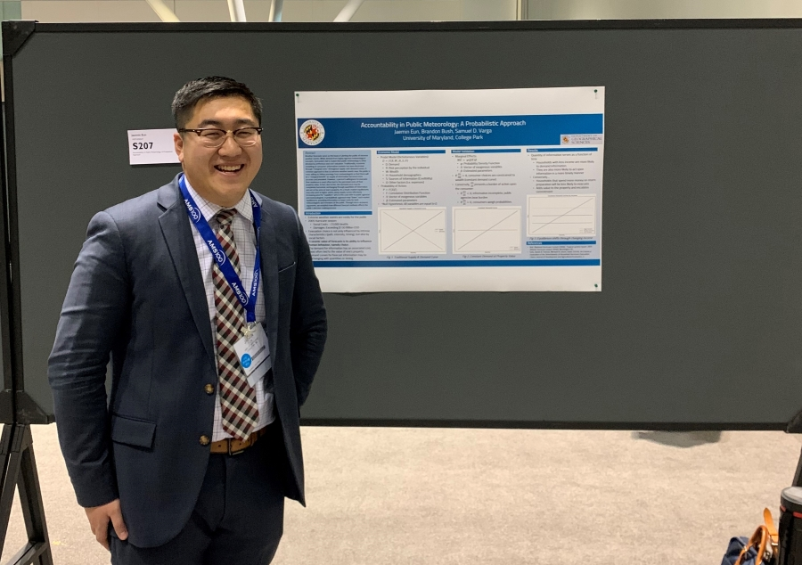

About
University of Maryland Graduate Student
M.S. Geospatial Information Sciences

Hello! Thank you for visiting my page! I created this website during the 2020 COVID-19 Pandemic as a way of learning something new. Given the challenges to employment during the epidemic, I decided to learn a little bit about HTML and CSS to make a portfolio website and show people the type of work I have been doing since my undergraduate years. I am currently a graduate student at the University of Maryland (UMD) studying GIS (Geographic Information Science). Throughout the years, I have combined my background in Atmospheric Science and Geography to study human interests in environmental issues. As an undergraduate, I had the ability to submit multiple research projects as part of peer-refereed conference proceedings.
As you might be able to tell from the layout of my webpage, I split my interests between scientific issues and GIS topics. My day is usually varied between analyzing different types of data. I might start the day with a geodatabase to analyze Census data and then end the day writing a Linux Shell Script to obtain Climate Change data for econometric analysis. While some of my work meets in the middle, the fact of the matter is, I really enjoy both. I love how science requires us to approach challenges in an analytical manner, and I really love how GIS exposes us to patterns that are hidden within our environment. Science and GIS are powerful tools that allow us to serve as bridges between communities. The reason I created this website was to be able to share my work in both GIS and Science. As a young career professional, I wanted to be able to have a platform that made it easy for people to reach me. Maybe you’re a graduate student in communications who wants to learn more about communicating scientific issues. Maybe you’re an undergraduate student looking for advice in GIS. Or perhaps, you might be a hiring manager looking to find examples of my work. Whatever your reasons might be for stumbling across my site, please feel free to ask me anything.
-Jaemin Eun